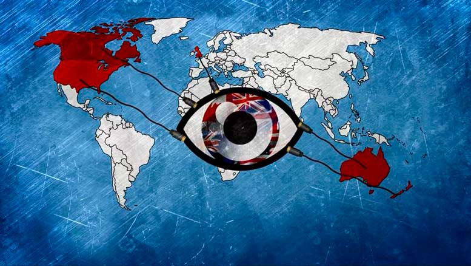

Импортозамещение в области
оборонно-промышленного комплекса
необходимо уже сегодня

На днях Министерство экономического развития РФ обнародовало данные об объемах государственных закупок в области программного обеспечения (ПО) в 2014 году. Согласно этим данным, в уходящем году с целью закупки ПО государственные компании потратили 58 млрд руб. Лишь 20% от этой суммы пошло на закупку отечественных разработок, все остальные средства были потрачены на иностранные решения.
В начале года эксперты компании InfoWatch принимали участие в разработке проекта «Концепция создания, развития и использования информационных технологий в оборонно-промышленном комплексе Российской Федерации на период до 2020 года». Согласно информации, приведенной в данном документе, проведенное в 2012 году Минпромторгом России выборочное исследование показало, что на 100 человек инженерно-технического и управленческого персонала предприятий оборонно-промышленного комплекса (ОПК) в среднем приходится 82 компьютера и 81 автоматизированное рабочее место (АРМ). В 504 организациях ОПК используются более 100 различных типовых информационных систем отечественного и зарубежного производства и свыше 130 систем, разработанных или адаптированных непосредственно предприятиями ОПК. В целом исследование показало, что практически все организации ОПК используют зарубежное компьютерное оборудование и общесистемное программное обеспечение. Например, значительные средства расходуются на приобретение лицензий Microsoft Windows, необходимых для функционирования прикладных информационных систем. Использование зарубежного оборудования и ПО влечет технологическую зависимость большинства отраслей ОПК от импорта аппаратно-программных средств и увеличивает риски киберугроз.
Чем опасно использование зарубежного программного и аппаратного обеспечения на предприятиях оборонно-промышленного комплекса? Прежде всего, тем, что создает серьезную угрозу информационной безопасности страны.
Большинство зарубежных программных средств в процессе эксплуатации взаимодействуют с производителем программного обеспечения через глобальные сети передачи данных, в том числе при активации и проверке действия лицензий, обновлении программного обеспечения и так далее. В кризисный период техническая поддержка программного обеспечения может быть прекращена, и все установленное на предприятии программное обеспечение перестанет функционировать. Таким образом, будет парализовано управление критически важными объектами предприятий ОПК.
Еще хуже ситуация с аппаратным обеспечением и компьютерными комплектующими. В России нет собственного аппаратного обеспечения, прежде всего, процессоров. Поэтому при введении санкций, запрещающих иностранным производителям оборудования обеспечивать поддержку своих устройств на территории России, или же при удаленной команде их полного выключения, аппаратное обеспечение автоматически превратится в груду бесполезного железа.
Через уязвимости в программном и аппаратном обеспечении возможно проведение целенаправленных атак на объекты критически важной инфраструктуры страны, которыми в частности и являются предприятия оборонно-промышленного комплекса. Последствия могут быть плачевными: от вывода из строя всей инфраструктуры предприятия до попадания в руки иностранных спецслужб секретной информации военного характера.
Таким образом, в связи с ростом угроз, ужесточением санкций против России со стороны иностранных государств, усилением требований законодательства Российской Федерации, государственных и отраслевых стандартов и т.д.
важнейшей задачей для предприятий ОПК является импортозамещение, а именно замена используемых иностранных систем на отечественные аналоги.
Имеющиеся отечественные разработки
Ассоциация разработчиков программных продуктов «Отечественный софт», в которую входит и компания InfoWatch, провела анализ имеющегося на данный момент на отечественном рынке российского ПО. В настоящий момент в России отсутствует собственная BIOS (англ. basic input/output system — «базовая система ввода-вывода», определяет ход процесса загрузки компьютера), хотя определенные шаги в этом направлении уже сделаны. Что касается операционных систем (ОС), то есть определенные наработки на основе свободного программного обеспечения (Linux). В оборонно-промышленном комплексе в настоящее время используются специализированные отечественные разработки, их необходимо развивать для дальнейшего повсеместного использования на предприятиях ОПК. В России есть и хорошие решения в области управления предприятием.
Одной из самых богатых на отечественные программные решения является область информационной безопасности. Российские разработки представлены во всех секторах информационной безопасности — это и антивирусная защита, и файерволы, и системы защиты от утечек, и системы контроля доступа, и IDS/IPS, и системы защиты от целенаправленных атак, и другие классы решений. Таким образом, переход отечественных предприятий военно-промышленного комплекса на российские программные разработки во многих областях, в особенности в сфере информационной безопасности, возможен уже сегодня. А при наличии достаточной финансовой поддержки со стороны государства отечественная софтверная отрасль способна разработать отсутствующие на данный момент классы решений в кратчайшие сроки.
Шаги по противодействию угрозам информационной безопасности
Важнейшими задачами государства по противодействию угрозам информационной безопасности на сегодняшний день являются обеспечение цифрового суверенитета (права и возможности национального правительства самостоятельно и независимо определять свои национальные интересы в цифровой сфере), в частности мониторинг и контроль сети интернет, импортозамещение и поддержка отечественных разработчиков; развитие законодательной базы (приоритеты, стратегические направления, требования и рекомендации); акцент на безопасности критически важных объектов, частью которых являются предприятия ОПК; обучение и повышение осведомленности сотрудников предприятий в области информационной безопасности и т.д. Данные меры в комплексе с применением современных технических средств защиты отечественной разработки способны значительно повысить уровень защищенности критически важных объектов РФ от современных угроз информационной безопасности.
Наталья Касперская,
генеральный директор Группы компаний InfoWatch
|